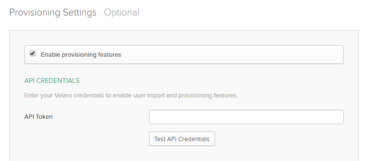

This integration with Okta is currently under development and is not available to customers yet. Contact support@velaro.com to learn more.
The following Provisioning features are supported:
An Enterprise subscription plan is required for Okta SSO and Okta provisioning.
Navigate to the integrations page.
Click the "Configure" button on the Okta integration card
Generate an API Token by clicking the "refresh" icon next to the API Token field.
Enable provisioning features, and paste the API Token into the Provisioning settings in Okta.

Select the correct endpoint based on your Velaro tenant
Click the "Test API Credentials" button to verify the token and base URL are configured correctly.
Enable "Create Users" and "Deactivate Users"